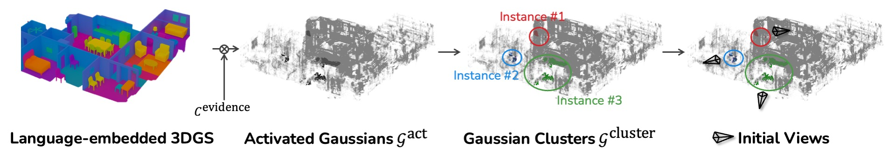
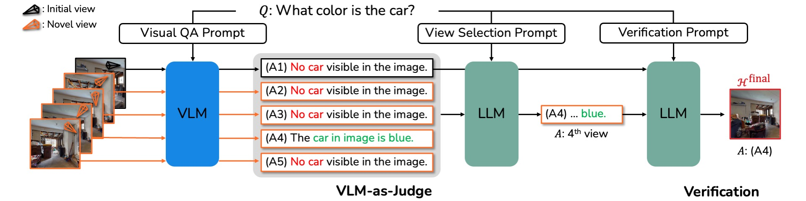
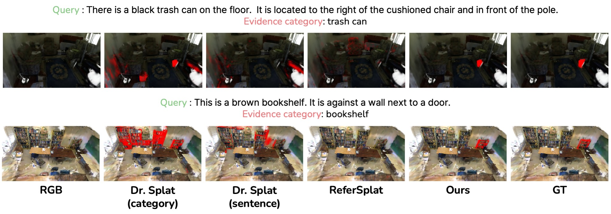

Vision-Language Models (VLMs) have demonstrated strong reasoning capabilities over images and videos, yet their application to embodied scene understanding is often constrained by the fixed viewpoints stored in episodic RGB-D memories. These observations may fail to capture query-relevant evidence due to occlusions, object truncation, restricted fields of view, or suboptimal view composition. We present SplatReasoner, a framework that introduces novel view synthesis into the VLM reasoning process by leveraging 3D Gaussian Splatting (3DGS). Given a user query about a 3D scene, SplatReasoner retrieves relevant observations and synthesizes query-conditioned viewpoints that reveal the visual evidence needed to answer the query and ground the referred entities in 3D. Experiments show that query-conditioned novel view synthesis improves both embodied reasoning and 3D grounding over fixed-view memory and language-embedded 3DGS baselines.

Given \(N\) pre-captured views, we sample \(L'\) images to perform embodied tasks. First, we select \(L\) initial views from \(N\) input views through initial view selection (\(N \gg L\)). Then, we augment each initial view with \(V\) novel views. Finally, we proceed with the final view selection with VLMs to find the most informative views to answer the query.

First, we identify the activated Gaussians \(\mathcal{G}^{\mathrm{act}}\) using a set of evidence categories \(\mathcal{C}^{\mathrm{evidence}}\) extracted from the query \(\mathcal{Q}\). Next, these activated Gaussians are grouped into clusters \(\{\mathcal{G}^{\mathrm{cluster}}_l\}_{l=1}^{L}\) that serve as instance-level candidates. Finally, the initial viewpoints are determined by maximizing the visibility score.

For each initial view, we synthesize novel views and employ a VLM-as-Judge to select the most informative viewpoints from both the initial and novel view candidates. To ensure that the view selected by the VLM-as-Judge provides richer information than the initial one, we conduct a verification stage.
Methods marked with * and the Human score are reported from OpenEQA, while all other results are reproduced. We report OpenEQA results since the code is not publicly available. Average frames denote the number of final views used to answer queries. † indicates that while novel views are utilized for the VLM-as-Judge, the actual number of input frames fed into the VLMs remains consistent with the reported average frames.

| Method | 3D mIoU | Acc@8 | Acc@10 |
|---|---|---|---|
| Dr. Splat (category) | 8.73 |
34.53 |
28.53 |
| Dr. Splat (sentence) | 9.44 |
34.28 |
29.35 |
| ReferSplat | 3.14 |
10.68 |
7.32 |
| SplatReasoner (ours) | 11.12 |
35.84 |
32.75 |
Acc@k denotes the percentage of predictions whose IoU with the ground truth exceeds k%.
@inproceedings{yu2026splatreasoner,
title={SplatReasoner: Enhancing Embodied Reasoning and Grounding by Novel View Synthesis},
author={Yu-Ji, Kim and Lee, Dahye and Jun-Seong, Kim and Hyeon-Woo, Nam and Kim, GeonU and Kwon, Yongjin and Wang, Yu-Chiang Frank and Choe, Jaesung and Oh, Tae-Hyun},
booktitle={ECCV},
year={2026}
}